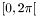

User interaction is achieved by allowing the user to control the value of internal variables, which are available during the execution of a script. Which internal variables are changed depends on the currently active mouse mode. Currently there are ten mouse modes available. In every mouse mode holding down the left or right mouse button and moving the mouse on the visualization window (the window you see the 3D-graphics), has a different effect. In mouse mode 0 the whole space is rotated (left mouse button) or translated (right mouse button), per default. Mouse modes 1 to 9 simply change a set of internal variables which can be used to draw vectors or rotations. These internal variables can be used directly in CLUScript.
How you activate the different mouse modes depends on your front-end. If you use GLUT then the mouse mode is currently set via the keys 0 to 1. In CLUCalc you set the mouse mode either via a menu option or by pressing CTRL+0 to CTRL+9, i.e. hold down the CTRL (Strg) key and press one of the number keys. Independent of the mouse mode you are in you can always rotate or translate the whole space by holding down the CTRL (Strg) key and one of the mouse buttons while moving the mouse.
- Attention:
- Holding down the left mouse button and moving the mouse rotates the space or object about the
 - and
- and  -axis. If you press shift while holding down the left mouse button and moving the mouse the space or object is rotated about the - and
-axis. If you press shift while holding down the left mouse button and moving the mouse the space or object is rotated about the - and  -axis. With the right mouse button you can translate the space or object along the - and -direction, and if you hold down shift as well, along the - and -direction.
-axis. With the right mouse button you can translate the space or object along the - and -direction, and if you hold down shift as well, along the - and -direction.
The easiest way to use user interaction in CLUScript is via the VecXX functions. For example, if you write VecE3(1) the vector returned is affected by moving the mouse with the right mouse button pressed in mouse mode 1. Initially, the internal variables that are affected by moving the mouse in different mouse modes are set to zero. Therefore, if you want to give a vector an initial offset simply write A = VecE3(1) + e1, for example.
A different way to use user interaction is through the function Mouse. This function expects three parameters:
-
The mouse mode. Allowed values are counters in the range of 1 to 9.
-
Rotation values (1) or translation values (2). The rotation values are returned in radian and clamped to the range  .
-
Coordinate of rotation or translation. For rotation this gives the rotation angle about the -, - and -axis. For translation it gives the translation along those axes.
The following example shows how the Mouse function can be used to translate and rotate a vector. This script may be found under Mouse1.clu.
DefVarsE3();
?RX = Mouse(1,1,1);
?RY = Mouse(1,1,2);
?RZ = Mouse(1,1,3);
?TX = Mouse(1,2,1);
?TY = Mouse(1,2,2);
?TZ = Mouse(1,2,3);
R = RotorE3(1, 0, 0, RX);
R = R * RotorE3(0, 1, 0, RY);
R = R * RotorE3(0, 0, 1, RZ);
:R:DBlue;
:X = VecE3(TX, TY, TZ) + e1:Red;
:*X;
:Y = R * X * ~R:Blue;
:*Y;